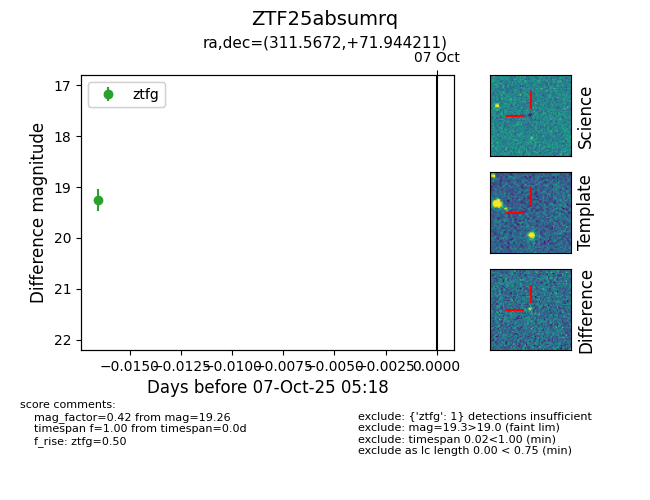

FINK: ZTF25absumrq
Lasair: ZTF25absumrq
ALeRCE: ZTF25absumrq
ZTF25absumrq (ztf,fink)
equatorial (ra, dec) = (311.5672,+71.94421)
galactic (l, b) = (106.3690,+17.51940)

last ztfg=19.26
1 ztfg detections